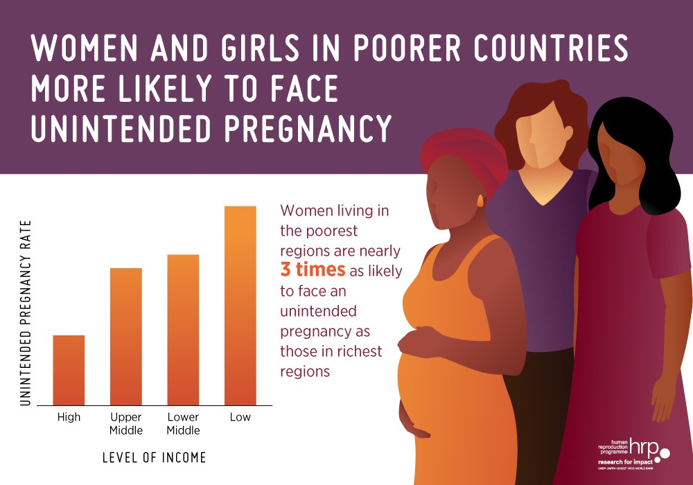
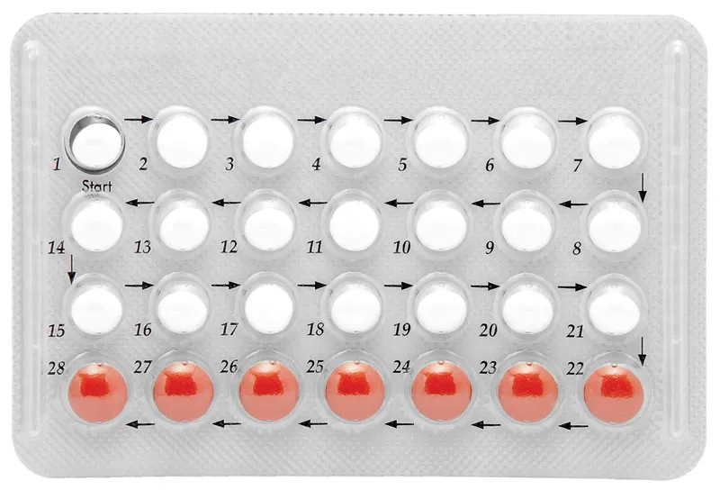
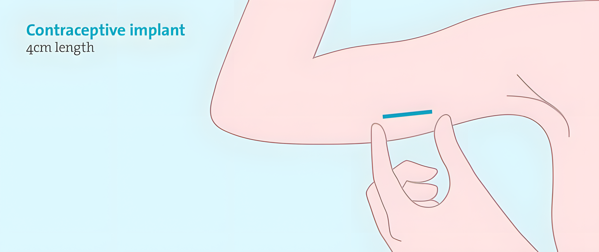
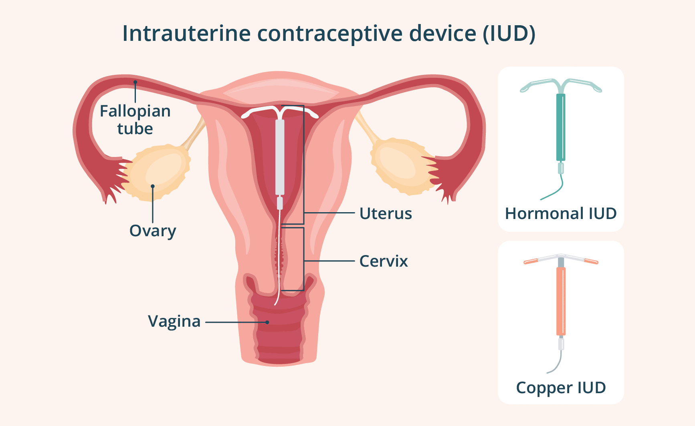
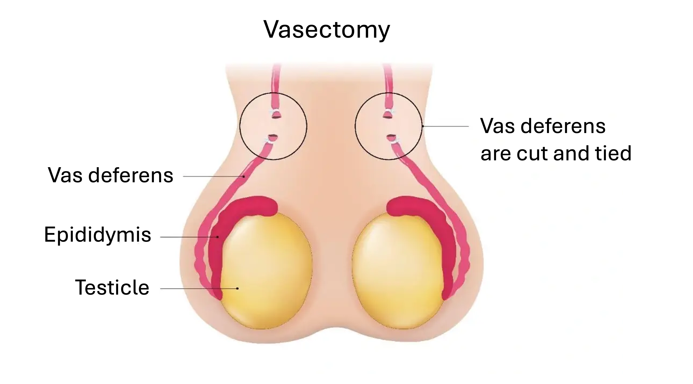

Contraception
How people prevent pregnancy and protect against infection — what "effectiveness" really means, and how the major methods actually compare, from the withdrawal method to the IUD.
Why Contraception Matters
Most of human reproductive life is spent trying not to get pregnant. Someone who wants two children spends only a few years of their life trying to conceive — and roughly three decades trying to avoid it. Contraception is how people manage that long stretch, deciding whether, when, and how often to have children. It is one of the most practical topics in this entire book, and also one of the most misunderstood: the difference between a method that works and one that fails often has less to do with the method itself than with how well we understand it.
In the United States, a little over 40% of all pregnancies are unintended (Finer & Zolna, 2016; CDC, 2025; NCHS, 2023)ReferencesFiner, L. B., & Zolna, M. R. (2016). Declines in unintended pregnancy in the United States, 2008–2011. New England Journal of Medicine, 374(9), 843–852. | Centers for Disease Control and Prevention. (2025, January 31). Unintended pregnancy. National Center for Chronic Disease Prevention and Health Promotion, Division of Reproductive Health.

Unwanted pregnancies are about half as likely to benefit from prenatal care (Lindberg et al., 2015)ReferenceLindberg, L., Maddow-Zimet, I., Kost, K., & Lincoln, A. (2015). Pregnancy Intentions and Maternal and Child Health: An Analysis of Longitudinal Data in Oklahoma. Maternal and Child Health Journal, 19(5), 1087–1096. https://doi.org/10.1007/s10995-014-1609-6. Sadly, children who are unwanted are far more likely to grow up mistreated by their parents and are more likely to display poor social and emotional development (Daley et al., 2025; David, 2011; Joyce et al., 2000)ReferencesDaley, S. F., Gonzalez, D., Bethencourt Mirabal, A., & Afzal, M. (2025). Child Abuse and Neglect. In StatPearls. StatPearls Publishing.
Sexually transmitted infections (STIs) are another major concern. About 1 in 5 people in the U.S. have an active infection from sex (Kreisel et al., 2021)ReferenceKreisel, K. M., Spicknall, I. H., Gargano, J. W., Lewis, F. M. T., Lewis, R. M., Markowitz, L. E., Roberts, C. P., Johnson, A. S., Song, R., St. Cyr, S. B., Weston, E. J., Torrone, E. A., & Weinstock, H. S. (2021). Sexually transmitted infections among US women and men: Prevalence and incidence estimates, 2018. Sexually Transmitted Diseases, 48(4), 208–214.. That's nearly 70 million Americans with an STI, with roughly 26 million new infections occurring each year. Nearly half of all STIs are carried in people aged 15 to 24. What's more, these numbers have been going up in recent years, with rates of chlamydia, gonorrhea, and syphilis significantly increasing from 2018 to 2023 (CDC, 2025; The Lancet, 2022)ReferencesCenters for Disease Control and Prevention. (2025). Sexually transmitted infections surveillance, 2024 (provisional). U.S. Department of Health and Human Services.

Certain contraceptives, like condoms, greatly protect people from contracting STIs. If used correctly, condoms are typically 60–80% effective at blocking STI transmissions. Condoms are especially effective in protecting against HIV, which is arguably one of the most dangerous STIs (Giannou et al., 2016)ReferenceGiannou, F. K., Tsiara, C. G., Nikolopoulos, G. K., et al. (2016). Condom effectiveness in reducing heterosexual HIV transmission: A systematic review and meta-analysis of studies on HIV serodiscordant couples. Expert Review of Pharmacoeconomics & Outcomes Research, 16(4), 489–499. https://doi.org/10.1080/14737167.2016.1102635.
When you hear a statistic like, "Condoms are 75% effective at blocking the spread of HIV," what does that really mean? Many people will interpret that as meaning if you had sex with someone who is HIV positive one time, you will have a 75% chance of not getting HIV yourself. However, this is a common misunderstanding of what effectiveness ratings actually represent.
Effectiveness represents a simplified experiment: Take 100 people who use a given contraceptive for 1 year and count how many get an STI or pregnant (Hatcher et al., 2011)ReferenceHatcher, R. A., Trussell, J., Nelson, A. L., Cates, W., Kowal, D., & Policar, M. S. (Eds.). (2011). Contraceptive technology (20th ed.). Ardent Media.. That count is the failure rate, which is used to calculate effectiveness. If you have 100 couples where one partner has HIV and the other does not and they have sex regularly for 1 year, 25 of those couples will see a transmission of HIV. 100 − 25 = 75, which is how you arrive at condoms being 75% effective at preventing HIV infection.
So, what does that mean when it comes to having sex just one time? Given that couples have sex about 80 times per year on average, your chances of contracting HIV from just one sexual encounter are 80 times less than that. That means having sex one time with someone who is HIV positive while using condoms carries only a 0.3% chance of HIV transmission. In other words, condoms are extremely effective at preventing STIs, especially during single encounters!
One thing that complicates these numbers is that not everyone uses contraceptives the right way. Some people don't know how to properly use a condom. Many people use contraceptives unreliably, perhaps using condoms only half the time they have sex. This means every contraceptive has 2 different failure rates. The perfect-use ratePerfect-use rateA measure of how well a contraceptive works when it is used correctly and consistently every single time, exactly as instructed. It represents the method's best-case effectiveness, which can differ sharply from what happens in everyday life.View in glossary → assumes the method is used correctly and reliably — every time, exactly as instructed. The typical-use rateTypical-use rateA measure of how well a contraceptive works in the real world, accounting for forgotten pills, inconsistent use, and incomplete instruction. For some methods it nearly matches the perfect-use rate, while for others the gap is large, and that gap reflects human behavior rather than the method itself.View in glossary → is what actually happens in the real world, when people forget a pill occasionally or have never been properly taught how to use condoms. For some methods the two numbers are nearly the same. For others, the gap is enormous. And that gap has nothing to do with the contraceptive. It's about human behavior — memory, habit, motivation, and the messy reality of people's lives.

When rating the effectiveness of contraceptives, it's important to note that if a couple uses no form of contraceptive, they have an 85% chance of getting pregnant (Trussell, 2011)ReferenceTrussell, J. (2011). Contraceptive failure in the United States. Contraception, 83(5), 397–404. https://doi.org/10.1016/j.contraception.2011.01.021. That "failure rate" is what contraceptives should be compared to.
6.1 Traditional Methods
Before we start getting into the effectiveness of modern contraceptives, let's talk about two very old methods of preventing pregnancy. One is the withdrawal or pull-out method, which is when the man pulls his penis out of the vagina before ejaculating. This method has been around since the dawn of humanity. Clearly this isn't a perfect method. It can be hard to time and takes a lot of self-control. Typical-use effectiveness of the withdrawal method is about 80% in preventing pregnancy (Trussell, 2011)ReferenceTrussell, J. (2011). Contraceptive failure in the United States. Contraception, 83(5), 397–404. https://doi.org/10.1016/j.contraception.2011.01.021. This means that if 100 couples practice the withdrawal method for 1 year, 20 of those couples will get pregnant anyway.

The rhythm or calendar methodRhythm or calendar methodA contraceptive approach, also called fertility awareness, that involves tracking the menstrual cycle and avoiding sex during the days of peak fertility. It can work reasonably well for someone with a regular, carefully tracked cycle, but about 1 in 4 typical users conceive within a year.View in glossary → (also called fertility awarenessFertility awarenessThe practice of tracking bodily signs, such as cervical mucus, basal body temperature, and cycle length, to identify the fertile days of the cycle. People use it both to achieve pregnancy and, as a contraceptive approach often called the rhythm method, to avoid it.View in glossary →) means tracking a woman's ovulatory cycle and skipping sex during times of peak fertility. There are many methods used to do this, such as tracking periods, checking cervical mucus, and measuring basal body temperature. If a woman has a regular cycle and tracks it carefully, this method can work reasonably well. But in typical use, about 1 in 4 people relying on it get pregnant within a year, meaning the method is about 75% effective (Hatcher et al., 2011)ReferenceHatcher, R. A., Trussell, J., Nelson, A. L., Cates, W., Kowal, D., & Policar, M. S. (Eds.). (2011). Contraceptive technology (20th ed.). Ardent Media..

Both of these methods are fairly effective, especially when compared to the 85% pregnancy rate of couples who use no form of contraceptive. This is why these methods have been used for likely thousands of years. But, as you'll soon see, there are far more effective forms of contraception available to us today.
6.2 Barrier Methods
Barrier methods do exactly what the name says: they put a physical wall between sperm and egg. Most also offer a second benefit, which is protection against STIs.
Male condomsMale condomsA thin sheath worn over the penis that blocks sperm and also protects against sexually transmitted infections. With perfect use only about 2 in 100 partners conceive in a year, rising to about 13 in typical use, with most failures coming from breakage, slippage, or not using one every time.View in glossary → are a thin sheath worn over the penis. With perfect use, only about 2 out of 100 partners get pregnant in a year when using condoms. In typical use, that climbs to about 13. Most condom failures are due to breakage, slipping off the condom, or not using one every single time (CDC, 2024)ReferenceCenters for Disease Control and Prevention. (2024). Contraception. U.S. Department of Health and Human Services.. Condoms most commonly break if they are used with lube that is not safe for use with latex or polyethylene, such as oil-based moisturizers. Condoms rarely break on their own, as they have to endure mandated and regular quality testing. Condoms can slip off the penis during intercourse if they don't fit snugly. Many men use larger ("magnum") condoms when they don't actually need to. Condoms should feel slightly tight around the penis, although they shouldn't be uncomfortably tight.

Female (internal) condomsFemale (internal) condomsA pouch inserted into the vagina with a flexible ring at each end that guards against both pregnancy and sexually transmitted infections. They are less effective than male condoms, failing about 21 times in 100 in typical use, and some people find them awkward to insert, which helps explain their limited use.View in glossary → are a pouch inserted into the vagina, with a ring at each end. They also guard against STIs; although, they're less effective than male condoms — about 21 out of 100 in typical use (CDC, 2024)ReferenceCenters for Disease Control and Prevention. (2024). Contraception. U.S. Department of Health and Human Services.. Also, some people find them awkward to insert or uncomfortable to wear during sex. This is likely why they are used far less than male condoms, with only about 30% of women ever using them (Weeks et al., 2013)ReferenceWeeks, M. R., Coman, E., Hilario, H., Li, J., & Abbott, M. (2013). Initial and Sustained Female Condom Use Among Low-Income Urban U.S. Women. Journal of Women's Health, 22(1), 26–36. https://doi.org/10.1089/jwh.2011.3430. As of 2018, the only FDA-approved female condom, FC2 by Veru, was switched from over-the-counter to prescription-only due to poor sales. So, there are currently no over-the-counter options for female condoms in the U.S. Although, they can be purchased online directly from the manufacturer (ASHA, 2023)ReferenceAmerican Sexual Health Association (ASHA). (2023). New Platform Makes It Easier To Get Internal Condoms | American Sexual Health Association. https://www.ashasexualhealth.org/new-platform-makes-it-easier-to-get-internal-condoms/.
For detailed instructions on how to use female condoms, visit cdc.gov/condom-use/resources/internal.html.
The cervical cap and the sponge both cover the cervix to block sperm, and both are used with spermicide. They're moderately effective for people who haven't given birth — roughly 14 out of 100 get pregnant in a year. They become significantly less effective for women who have given birth before due to changes in the shape and size of the cervix opening. Even when used perfectly, the cap still fails about 9 times out of 100 (Hatcher et al., 2011)ReferenceHatcher, R. A., Trussell, J., Nelson, A. L., Cates, W., Kowal, D., & Policar, M. S. (Eds.). (2011). Contraceptive technology (20th ed.). Ardent Media.. Neither of these methods protect against STIs, given that they allow semen to enter the woman's body. While these methods were more popular in the 1980s, their use has steadily declined since then. Currently, less than 1% of women use either method of contraception (Daniels & Abma, 2025)ReferenceDaniels, K., & Abma, J. C. (2025). Current Contraceptive Status Among Females Ages 15–49: United States, 2022–2023. https://doi.org/10.15620/cdc/174618.

6.3 Hormonal Methods
Remember the hormone loop covered in the previous chapter on fertility, where the brain sends chemical messages to the ovaries to stop or start egg production. Much of this is driven by 2 hormones: estrogen and progesterone. Hormonal contraceptives work by hijacking that loop. Most do three things at once: they switch off the signal that triggers ovulation (no egg released), they thicken cervical mucus into a plug sperm can't swim through, and they thin the uterine lining. As a group, hormonal contraceptives offer women the best protection against pregnancy. However, none of them protect against STIs.
The combination pillCombination pillA daily oral contraceptive containing both estrogen and progestin, a synthetic form of progesterone. Used perfectly it fails only about 3 times in 1,000 users a year, though typical use raises that to roughly 7 in 100 because users must remember a pill every day. It also tends to produce lighter, more predictable periods and milder PMS.View in glossary → contains estrogen and progestin (an artificial form of progesterone) and is taken daily. Used perfectly, only about 3 in 1,000 users get pregnant in a given year — a 0.3% failure rate. In typical use, however, that jumps to about 7 in 100 (CDC, 2024)ReferenceCenters for Disease Control and Prevention. (2024). Contraception. U.S. Department of Health and Human Services.. The difference between a perfect and typical user mostly comes down to having to remember to take the pill every single day. Beyond preventing pregnancy, the pill has other advantages. It typically leads to lighter, more predictable periods, less period discomfort, and fewer symptoms of PMS. Many women experience some side-effects when first getting onto birth control, such as changes in mood or temporary weight gain. For most, these symptoms lessen with time. Studies show that birth control can slightly increase risk for blood clots, but only for smokers over the age of 35.

The mini-pillMini-pillA progestin-only daily contraceptive that drops the estrogen found in the combination pill, making it a good option for people who cannot take estrogen, including those who are breastfeeding. It works mainly by thickening cervical mucus and must be taken at the same time each day to stay reliable.View in glossary → (progestin-only) drops the estrogen, making it a good option for those who can't take estrogen supplements, which includes people who are breastfeeding or have had certain cancers. It works mainly by thickening cervical mucus. The trade-off is that it has to be taken at the same time every day or its protection slips more than combination pills. Both perfect and typical-use effectiveness are similar to the combination pill.
The patchPatch (contraceptive)A skin patch that delivers the same hormones as the combination pill. A person wears one patch a week for three weeks, then goes patch-free for a week, so it only needs to be remembered weekly rather than daily, though it exposes users to somewhat more estrogen.View in glossary → delivers the same hormones as the combination pill, but through the skin. You wear one patch for a week, replace it for three weeks running, then go patch-free for 1 week after that (that's when the period comes). The advantage is built in: you only have to remember it weekly, not daily. This means fewer chances to slip up. Effectiveness is about the same as the pill. One downside is that it exposes users to somewhat more estrogen, which can intensify some side-effects of hormonal birth control.
The vaginal ringVaginal ringA soft, flexible ring placed in the vagina that releases the same hormones as the combination pill. It stays in for three weeks and comes out for one, asking for even less day-to-day attention than the patch while matching it in effectiveness.View in glossary → is a soft, flexible ring placed in the vagina, releasing the same hormones. It stays in for three weeks, then comes out for one. It asks for even less remembering than the patch (basically once a month) and its effectiveness matches the pill and patch.

Depo-ProveraDepo-ProveraA progestin-only contraceptive shot given by a provider once every three months. Its convenience gives it a higher typical-use effectiveness than the daily pill, with a failure rate of about 4 in 100, though fertility can take several months to return after stopping.View in glossary → is a progestin-only shot given by a provider once every 3 months. Its big advantage is convenience, with it being administered only 4 times a year. This is why its typical-use effectiveness is higher than the daily pill, with a failure rate of only 4 in 100. The main drawback is that, after stopping, it can take several months for fertility to return.
Emergency contraceptionEmergency contraceptionA backup method, often called the morning-after pill, taken after unprotected sex to prevent pregnancy mainly by delaying or preventing ovulation. It works best the sooner it is taken, and it cannot end a pregnancy that has already implanted. It is built for emergencies rather than regular use.View in glossary → (often called the morning-after pill) is the backup, not the plan. Taken after unprotected sex — say, when a condom breaks — it works mainly by delaying or preventing ovulation. The sooner it's taken, the better it works, and pregnancy rates after using it run about 1 to 2% (Hatcher et al., 2011)ReferenceHatcher, R. A., Trussell, J., Nelson, A. L., Cates, W., Kowal, D., & Policar, M. S. (Eds.). (2011). Contraceptive technology (20th ed.). Ardent Media.. One important point: it prevents a pregnancy from starting and will not end one that has already implanted. It's built for emergencies, not for regular use. When taking emergency contraceptives, such as Plan B, women often experience a heavier period and more severe cramping than usual. They may also experience nausea, fatigue, headaches, and breast sensitivity (RxList, 2022)ReferenceRxList. (2022). Plan B (Levonorgestrel Emergency Contraception, Morning After Pill): Side Effects, Uses, Dosage, Interactions, Warnings. RxList. https://www.rxlist.com/plan-b-drug.htm. Serious side effects are very rare and there is no evidence that emergency contraceptives hurt a woman's fertility in the long-term.

6.4 Long-Acting Reversible Contraceptives (LARC)
Notice the pattern running through all of the hormonal methods? When these methods fail, it's most often due to common forgetfulness. It's difficult to remember to take a pill everyday or switch out a patch every week. For many, it can be difficult to regularly schedule a doctor's appointment to get a hormonal shot.
LARCs erase that problem. They're placed once and then work for years with nothing to remember. This is why their typical-use effectiveness is essentially the same as their perfect-use effectiveness; and both are exceptionally high. Plus, all LARCs are fully "reversible," which means fertility returns quickly once they're removed.
The implantImplant (contraceptive)A thin, matchstick-sized progestin-only rod, sold as Nexplanon, placed just beneath the skin of the upper arm. It suppresses ovulation and thickens cervical mucus, fails in fewer than 1 in 1,000 users a year, and now lasts up to five years, with fertility returning quickly after removal.View in glossary → is a thin, flexible, matchstick-sized rod sold in the United States under the brand name Nexplanon. It's placed just beneath the skin of the upper arm by a trained provider. It is a progestin-only contraceptive, much like the mini-pill. It works through several overlapping mechanisms: it suppresses ovulation by preventing the luteinizing hormone (LH) surge that triggers egg release, and it thickens the cervical mucus, which reduces the ability of sperm to reach the site of fertilization. The implant is exceptionally effective, with fewer than 1 in 1,000 users experiencing pregnancy in a given year. Fertility returns very quickly after removal. The FDA states that pregnancy can occur as early as one week after the implant is taken out (Nelson, 2026)ReferenceNelson, I. (2026). Birth control Implant (Nexplanon) Removal: Side Effects & When Will I Get My Period Back? Natural Cycles.

The IUDIUD (intrauterine device)A small device placed inside the uterus that comes in a hormonal version, which releases progestin, and a copper version, which uses no hormones and relies on copper as a natural spermicide. Both are over 99 percent effective and last for years, making them one of the most reliable contraceptives available.View in glossary → (intrauterine device) is a small device placed inside the uterus. It comes in 2 kinds: the hormonal version, which releases progestin only, and a copper version, which uses no hormones. The copper version of the IUD simply makes the uterus an unfriendly place for sperm, as copper is a natural spermicide. Both versions are over 99% effective and last anywhere from several years to a decade or more (Cleveland Clinic, 2024; Hatcher et al., 2011)ReferencesCleveland Clinic (2024). What Are Hormonal IUDs? Cleveland Clinic. https://my.clevelandclinic.org/health/drugs/hormonal-iud-mirena | Hatcher, R. A., Trussell, J., Nelson, A. L., Cates, W., Kowal, D., & Policar, M. S. (Eds.). (2011). Contraceptive technology (20th ed.). Ardent Media.. The main downsides are that insertion can be uncomfortable and the copper type can make periods heavier (hormonal ones often make them lighter).

6.5 Sterilization
For people who are certain they don't want children — or don't want any more — sterilization offers a permanent answer. Both versions are minor surgeries, and both are over 99% effective. While these procedures can sometimes be reversed through additional surgery, they should be treated as permanent given that fully reversing the procedures is never guaranteed (CDC, 2024)ReferenceCenters for Disease Control and Prevention. (2024). Contraception. U.S. Department of Health and Human Services..
VasectomyVasectomyMale sterilization in which the vas deferens, the tube carrying sperm from the testes, is cut or blocked. It is a quick procedure done under local anesthesia, is over 99 percent effective, and leaves testosterone, sex drive, and ejaculation unchanged, with the semen simply no longer carrying sperm.View in glossary → (male sterilization) cuts or blocks the vas deferens — the tube that carries sperm from the testes to the penis. It's a quick procedure done with only local anesthesia. Importantly, it doesn't change testosterone, sex drive, or the experience of ejaculation. The semen simply no longer carries sperm. It's simpler, cheaper, and lower-risk than female sterilization.

Tubal ligationTubal ligationFemale sterilization, commonly called getting your tubes tied, in which the fallopian tubes are closed off so egg and sperm can never meet. It is a minor surgery that is over 99 percent effective and meant to be permanent, though the tubes occasionally heal and reconnect, allowing a small percentage of later pregnancies.View in glossary → (female sterilization), commonly known as "getting your tubes tied," is a surgical procedure that closes off the fallopian tubes, so egg and sperm can never meet. The fallopian tubes may be blocked in several ways: clipped or banded using small clamps or rings, cauterized with electrical current, tied and cut using the classic method, or removed entirely. The entire procedure typically takes 30 minutes to an hour, and most patients go home the same day. It is considerably more involved than a vasectomy, which requires only a minor scrotal incision under local anesthesia, because abdominal access is required. That said, complications are rare: major complications occur in fewer than 0.5% of cases, and most women return to normal activity within days (Cleveland Clinic, 2023)ReferenceCleveland Clinic (2023). Tubal Ligation: Procedure, Recovery & Side Effects.

Surprisingly, the effectiveness of sterilization is somewhat lower than LARCs. While sterilization is a permanent form of contraceptive, there is a chance that the body can heal together the separated vas deferens or fallopian tubes. Recent findings by the National Survey of Family Growth (NSFG) found that 3–5% of women get pregnant after tubal ligation (Schwarz et al., 2024)ReferenceSchwarz, E. B., Chiang, A. Y., Lewis, C. A., Gariepy, A. M., & Reeves, M. F. (2024). Pregnancy after Tubal Sterilization in the United States, 2002 to 2015. NEJM Evidence, 3(9), EVIDoa2400023.
There is no single "best" method of contraceptive. The right choice depends on a person's health, their stage of life, how much they want to think about it day to day, and whether STI protection matters to them. And that last point is worth repeating: of everything here, only condoms guard against infection. That's why many people pair a highly effective pregnancy method with condoms, covering both risks at once.

Study Guide
Use these prompts to review the main ideas of the chapter. Try to answer each one in your own words before checking the Key Points at the end. Many of these also work well as discussion or think-pair-share questions.
Understanding Effectiveness
- Distinguish between the perfect-use and typical-use effectiveness rates. What accounts for the gap between them, and for which kinds of methods is the gap largest? Also: with no contraception a couple has about an 85% chance of pregnancy in a year — why is that number the baseline all methods are compared against?
- Sort the major contraceptive categories — traditional/barrier, hormonal, LARC, and sterilization — from generally least to most effective at preventing pregnancy. Which category is the most effective, and why? Which methods protect against STIs?
Choosing a Method
- A sexually active couple wants both very reliable pregnancy prevention and protection from STIs. What combination would you recommend, and why is this "dual" approach often suggested?
Key Points (Answer Guide)
Short model answers for self-checking. These are talking points, not the only acceptable wording.
- Perfect use assumes a method is used flawlessly every time; typical use reflects real life, where people forget pills or use condoms inconsistently. The gap comes from human behavior and is largest for methods that require frequent user action. The roughly 85% one-year pregnancy rate with no method is the baseline because effectiveness is measured by how much a method lowers that natural rate.
- Roughly least to most effective: traditional/barrier (withdrawal, condoms, cap/sponge) → hormonal (pill, patch, ring, shot) → LARC (implant, IUD) and sterilization (both over 99%). LARCs are the most effective reversible option because there is nothing to remember, so typical use is essentially the same as perfect use. Only condoms (male and internal) protect against STIs.
- Pair a highly effective pregnancy method (such as a LARC or the pill) with condoms. Because only condoms guard against infection, combining them covers both risks at once — strong pregnancy prevention from the first method and STI protection from condoms.
Key Terms
- Cervical cap and sponge
- Two barrier methods of contraception that cover the cervix to block sperm and are used together with spermicide. They work moderately well for people who have not given birth but become noticeably less effective afterward, and neither protects against sexually transmitted infections. Their use has declined sharply since the 1980s.
- Combination pill
- A daily oral contraceptive containing both estrogen and progestin, a synthetic form of progesterone. Used perfectly it fails only about 3 times in 1,000 users a year, though typical use raises that to roughly 7 in 100 because users must remember a pill every day. It also tends to produce lighter, more predictable periods and milder PMS.
- Depo-Provera
- A progestin-only contraceptive shot given by a provider once every three months. Its convenience gives it a higher typical-use effectiveness than the daily pill, with a failure rate of about 4 in 100, though fertility can take several months to return after stopping.
- Emergency contraception
- A backup method, often called the morning-after pill, taken after unprotected sex to prevent pregnancy mainly by delaying or preventing ovulation. It works best the sooner it is taken, and it cannot end a pregnancy that has already implanted. It is built for emergencies rather than regular use.
- Female (internal) condoms
- A pouch inserted into the vagina with a flexible ring at each end that guards against both pregnancy and sexually transmitted infections. They are less effective than male condoms, failing about 21 times in 100 in typical use, and some people find them awkward to insert, which helps explain their limited use.
- Fertility awareness
- The practice of tracking bodily signs, such as cervical mucus, basal body temperature, and cycle length, to identify the fertile days of the cycle. People use it both to achieve pregnancy and, as a contraceptive approach often called the rhythm method, to avoid it.
- Implant (contraceptive)
- A thin, matchstick-sized progestin-only rod, sold as Nexplanon, placed just beneath the skin of the upper arm. It suppresses ovulation and thickens cervical mucus, fails in fewer than 1 in 1,000 users a year, and now lasts up to five years, with fertility returning quickly after removal.
- IUD (intrauterine device)
- A small device placed inside the uterus that comes in a hormonal version, which releases progestin, and a copper version, which uses no hormones and relies on copper as a natural spermicide. Both are over 99 percent effective and last for years, making them one of the most reliable contraceptives available.
- Male condoms
- A thin sheath worn over the penis that blocks sperm and also protects against sexually transmitted infections. With perfect use only about 2 in 100 partners conceive in a year, rising to about 13 in typical use, with most failures coming from breakage, slippage, or not using one every time.
- Mini-pill
- A progestin-only daily contraceptive that drops the estrogen found in the combination pill, making it a good option for people who cannot take estrogen, including those who are breastfeeding. It works mainly by thickening cervical mucus and must be taken at the same time each day to stay reliable.
- Patch (contraceptive)
- A skin patch that delivers the same hormones as the combination pill. A person wears one patch a week for three weeks, then goes patch-free for a week, so it only needs to be remembered weekly rather than daily, though it exposes users to somewhat more estrogen.
- Perfect-use rate
- A measure of how well a contraceptive works when it is used correctly and consistently every single time, exactly as instructed. It represents the method's best-case effectiveness, which can differ sharply from what happens in everyday life.
- Rhythm or calendar method
- A contraceptive approach, also called fertility awareness, that involves tracking the menstrual cycle and avoiding sex during the days of peak fertility. It can work reasonably well for someone with a regular, carefully tracked cycle, but about 1 in 4 typical users conceive within a year.
- Tubal ligation
- Female sterilization, commonly called getting your tubes tied, in which the fallopian tubes are closed off so egg and sperm can never meet. It is a minor surgery that is over 99 percent effective and meant to be permanent, though the tubes occasionally heal and reconnect, allowing a small percentage of later pregnancies.
- Typical-use rate
- A measure of how well a contraceptive works in the real world, accounting for forgotten pills, inconsistent use, and incomplete instruction. For some methods it nearly matches the perfect-use rate, while for others the gap is large, and that gap reflects human behavior rather than the method itself.
- Vaginal ring
- A soft, flexible ring placed in the vagina that releases the same hormones as the combination pill. It stays in for three weeks and comes out for one, asking for even less day-to-day attention than the patch while matching it in effectiveness.
- Vasectomy
- Male sterilization in which the vas deferens, the tube carrying sperm from the testes, is cut or blocked. It is a quick procedure done under local anesthesia, is over 99 percent effective, and leaves testosterone, sex drive, and ejaculation unchanged, with the semen simply no longer carrying sperm.
- Withdrawal (pull-out) method
- A very old contraceptive practice in which the man removes his penis from the vagina before ejaculating. It is hard to time and demands self-control, giving it a typical-use effectiveness of about 80 percent.
References
- American Sexual Health Association (ASHA). (2023). New Platform Makes It Easier To Get Internal Condoms | American Sexual Health Association. https://www.ashasexualhealth.org/new-platform-makes-it-easier-to-get-internal-condoms/
- Centers for Disease Control and Prevention. (2024). Contraception. U.S. Department of Health and Human Services.
- Centers for Disease Control and Prevention. (2025, January 31). Unintended pregnancy. National Center for Chronic Disease Prevention and Health Promotion, Division of Reproductive Health.
- Centers for Disease Control and Prevention. (2025). Sexually transmitted infections surveillance, 2024 (provisional). U.S. Department of Health and Human Services.
- Cleveland Clinic (2023). Tubal Ligation: Procedure, Recovery & Side Effects.
- Cleveland Clinic (2024). What Are Hormonal IUDs? Cleveland Clinic. https://my.clevelandclinic.org/health/drugs/hormonal-iud-mirena
- Daley, S. F., Gonzalez, D., Bethencourt Mirabal, A., & Afzal, M. (2025). Child Abuse and Neglect. In StatPearls. StatPearls Publishing.
- Daniels, K., & Abma, J. C. (2025). Current Contraceptive Status Among Females Ages 15–49: United States, 2022–2023. https://doi.org/10.15620/cdc/174618
- David, H. P. (2011). Born unwanted: Mental health costs and consequences. American Journal of Orthopsychiatry, 81(2), 184–192.
- Finer, L. B., & Zolna, M. R. (2016). Declines in unintended pregnancy in the United States, 2008–2011. New England Journal of Medicine, 374(9), 843–852.
- Fitch, J. (2026). FDA approves 5-year use for etonogestrel implant 68 mg contraceptive. Contemporary OB/GYN. https://www.contemporaryobgyn.net/view/fda-approves-5-year-use-for-etonogestrel-implant-68-mg-contraceptive
- Frost, J. J., Singh, S., & Finer, L. B. (2007). U.S. women's one-year contraceptive use patterns, 2004. Perspectives on Sexual and Reproductive Health, 39(1), 48–55. https://doi.org/10.1363/3904807
- Giannou, F. K., Tsiara, C. G., Nikolopoulos, G. K., et al. (2016). Condom effectiveness in reducing heterosexual HIV transmission: A systematic review and meta-analysis of studies on HIV serodiscordant couples. Expert Review of Pharmacoeconomics & Outcomes Research, 16(4), 489–499. https://doi.org/10.1080/14737167.2016.1102635
- Hatcher, R. A., Trussell, J., Nelson, A. L., Cates, W., Kowal, D., & Policar, M. S. (Eds.). (2011). Contraceptive technology (20th ed.). Ardent Media.
- Jiang, T., Li, S., & Eisenberg, M. L. (2026). Real-World Live Birth Rates after Vasectomy: Data from the National Survey of Family Growth. The World Journal of Men's Health, 44. https://doi.org/10.5534/wjmh.250378
- Joyce, T. J., Kaestner, R., & Korenman, S. (2000). The effect of pregnancy intention on child development. Demography, 37(1), 83–94.
- Kreisel, K. M., Spicknall, I. H., Gargano, J. W., Lewis, F. M. T., Lewis, R. M., Markowitz, L. E., Roberts, C. P., Johnson, A. S., Song, R., St. Cyr, S. B., Weston, E. J., Torrone, E. A., & Weinstock, H. S. (2021). Sexually transmitted infections among US women and men: Prevalence and incidence estimates, 2018. Sexually Transmitted Diseases, 48(4), 208–214.
- Lindberg, L., Maddow-Zimet, I., Kost, K., & Lincoln, A. (2015). Pregnancy Intentions and Maternal and Child Health: An Analysis of Longitudinal Data in Oklahoma. Maternal and Child Health Journal, 19(5), 1087–1096. https://doi.org/10.1007/s10995-014-1609-6
- National Center for Health Statistics. (2023). Updated methodology to estimate overall and unintended pregnancy rates in the United States (Vital and Health Statistics, Series 2, No. 201). Centers for Disease Control and Prevention.
- Nelson, I. (2026). Birth control Implant (Nexplanon) Removal: Side Effects & When Will I Get My Period Back? Natural Cycles.
- RxList. (2022). Plan B (Levonorgestrel Emergency Contraception, Morning After Pill): Side Effects, Uses, Dosage, Interactions, Warnings. RxList. https://www.rxlist.com/plan-b-drug.htm
- Schwarz, E. B., Chiang, A. Y., Lewis, C. A., Gariepy, A. M., & Reeves, M. F. (2024). Pregnancy after Tubal Sterilization in the United States, 2002 to 2015. NEJM Evidence, 3(9), EVIDoa2400023.
- The Lancet Child & Adolescent Health. (2022). Youth STIs: An epidemic fuelled by shame. The Lancet Child & Adolescent Health, 6(6), 353.
- Trussell, J. (2011). Contraceptive failure in the United States. Contraception, 83(5), 397–404. https://doi.org/10.1016/j.contraception.2011.01.021
- Weeks, M. R., Coman, E., Hilario, H., Li, J., & Abbott, M. (2013). Initial and Sustained Female Condom Use Among Low-Income Urban U.S. Women. Journal of Women's Health, 22(1), 26–36. https://doi.org/10.1089/jwh.2011.3430